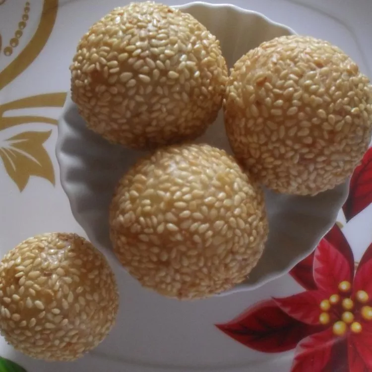

Home
Buchi
Description

This buchi recipe makes deep-fried glutinous rice flour balls filled with sweetened mung beans for a yummy Pinoy snack.
Ingredients
- 1 ¼ cups water, divided
- 3 ½ ounces green mung beans
- ½ cup white sugar
- 2 cups glutinous rice flour
- 2 tablespoons white sugar
- ⅛ teaspoon salt
- 1 quart cooking oil
Steps
- Combine 1 cup water and mung beans in a pot and bring to a boil; cook over medium heat until beans are very tender, about 30 minutes. Mash beans thoroughly, then stir in 1/2 cup sugar until well combined; set aside.
- Mix together rice flour, remaining 1/4 cup water, 2 tablespoons sugar, and salt in a large bowl; knead just enough to form a ball. Divide dough into small pieces and roll into balls. Flatten each dough ball, then spoon 1 tablespoon mashed bean mixture into the middle of dough. Wrap dough around bean mixture and pinch edges to seal.
- Heat oil in a deep fryer or large saucepan to 350 degrees F (175 degrees C). Fry balls in batches in hot oil until golden brown, 5 to 10 minutes per batch. Drain on paper towels and serve hot.